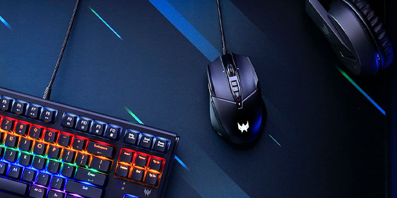

Autor:González López José David

LO MEJOR PARA TUS COMPETICIONES GAMER
El mouse gamer o ratón de juegos es un dispositivo periférico de computadora que en realidad es una extensión de la mano
del jugador de videojuegos. Es, ante todo, su herramienta de trabajo, por lo que no solo debe ser de alta calidad y conveniente,
sino también lo más funcional posible.
Los mouse gamer suelen tener una mayor sensibilidad y precisión, botones adicionales configurables y un diseño ergonómico para mayor comodidad durante largas sesiones de juego.